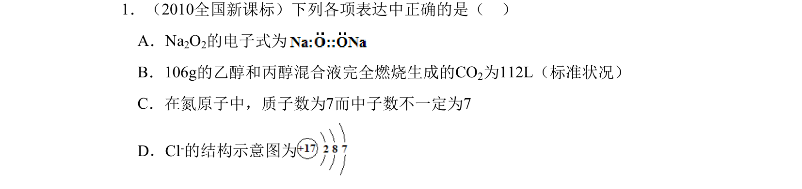
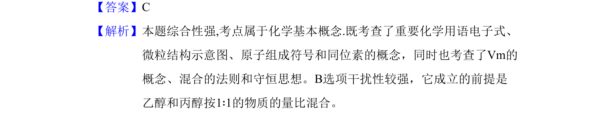

考点：化学用语 同位素 气体摩尔体积 混合物计算

考查化学用语、同位素、气体摩尔体积及混合物计算等基本概念，综合性较强。

📄 原 PDF 第 1 页：
素材/真题/吉林/2008-2024·（吉林）化学高考真题/2010年高考化学试卷（新课标）（解析卷）.pdf
1．（2010全国新课标）下列各项表达中正确的是（ ） A．Na2O2的电子式为 B．106g的乙醇和丙醇混合液完全燃烧生成的CO2为112L（标准状况） C．在氮原子中，质子数为7而中子数不一定为7 D．Cl-的结构示意图为
【答案】C 【解析】本题综合性强,考点属于化学基本概念.既考查了重要化学用语电子式、 微粒结构示意图、原子组成符号和同位素的概念，同时也考查了Vm的 概念、混合的法则和守恒思想。B选项干扰性较强，它成立的前提是 乙醇和丙醇按1∶1的物质的量比混合。